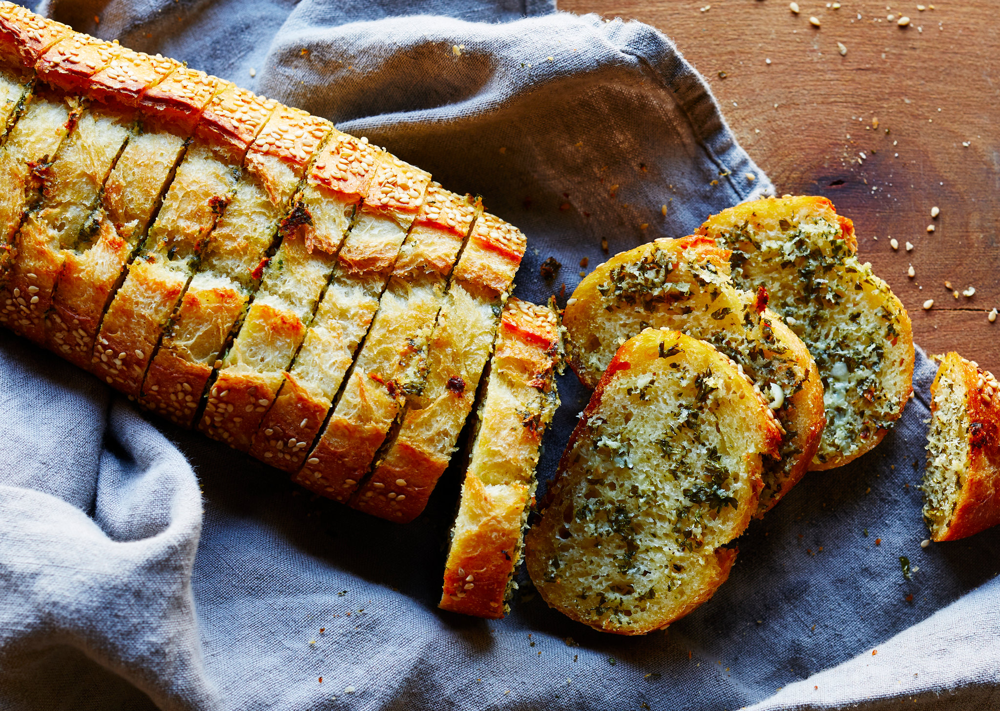

Garlic Bread

Garlic Bread Recipe
Making homemade pizza dough can sound like a lot of work, but it’s so worth the bragging rights. The dough itself requires few ingredients and just a little bit of rising and rest time. While you wait for the dough to be ready, you can get to work prepping your tomato sauce, chopping fresh vegetables, or grating the cheese you’ll put on top. Bake for 15 minutes, garnish with basil (or, let’s be real, more cheese), and enjoy showing off your way-better-than-takeout creation.
Ingredients
- 1/2 cup/8 tablespoons unsalted butter (1 stick), melted
- 4 fat garlic cloves, grated
- 1/2 cup Parmesan, grated
- 1/4 cup firmly packed chopped flat-leaf parsley
- 1/4 teaspoon kosher salt
- Black pepper
- 1 baguette or rustic crusty loaf
- 1/2 pound fresh mozzarella, thinly sliced (optional)
- Heat the oven to 400 degrees. In a small bowl, stir together the butter, garlic, Parmesan and parsley. Add the salt and generously season with pepper. Set aside while you cut the baguette.
- Cut deep slits into the baguette, 1-inch apart — don’t cut all the way through the loaf — and place the baguette on a large piece of foil. Using a teaspoon or an offset spatula, generously spread the seasoned butter inside each slit. Make sure to reach the bottom of the slit; don’t be shy here.
- Wrap the baguette in the foil, place on a baking sheet and bake for 15 minutes. Remove the baguette from the oven and unwrap the top (leave the bread on the foil). If you’re adding mozzarella, use the offset spatula or spoon to gently open each slit and tuck a piece of mozzarella in (it’s O.K. if the cheese pops out from the top a little). Return bread to the oven and bake until crisp and golden on top, another 5 minutes. Slice with a serrated knife (or tear with your hands) and serve at once.